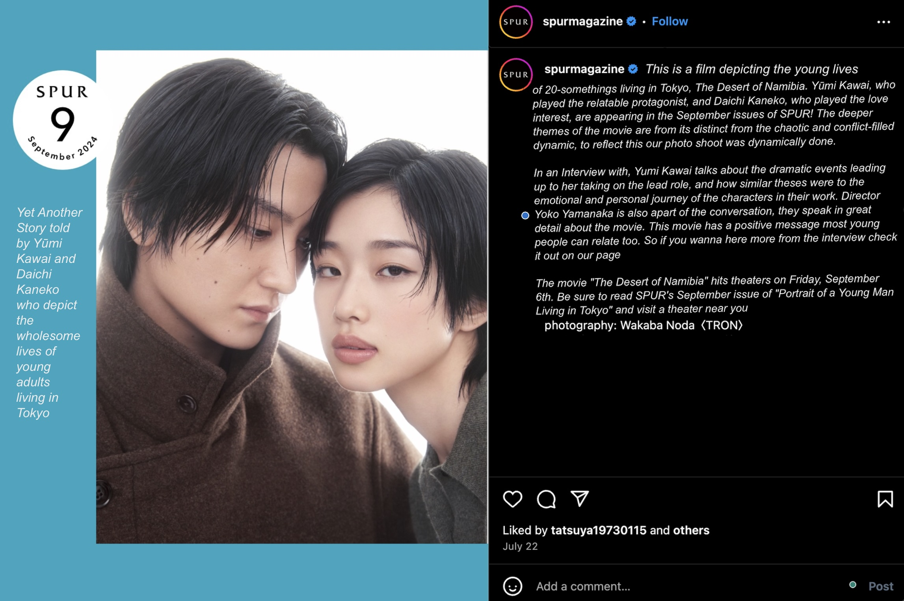
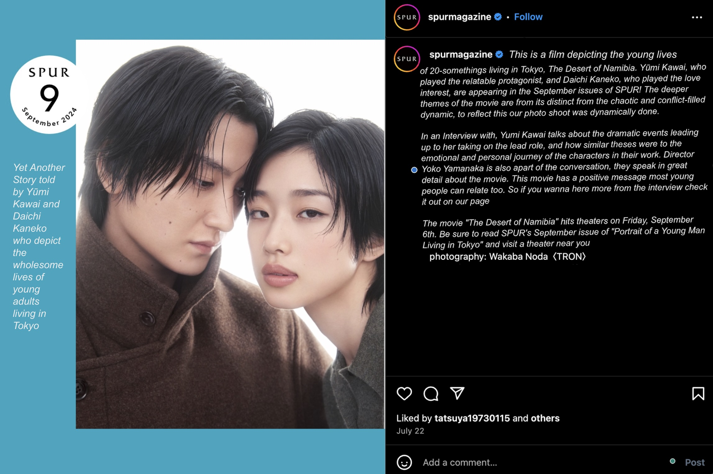

Passages From Kana Oya's Book Titled It's Ok
Click Here to Buy "Its OK" Visit Hana Oya's Website Follow Kana's LifeIt was so bad I had to stop modeling temporarily. Even after that, I still struggled with my skin problems until I was in my mid-twenties. When my skin was at its worst, I would try every product that was said to be good for acne. I would use all types of products on my skin, and it would get better for a while, but right after, it would come back even worse. I was always going between happy and sad. Now, looking back, I think several factors caused this: stress from trying to balance my academic and work life or my very unhealthy teenage eating habits. But, at that time, I was so focused on the visible or surface-level issues that I couldn't approach the deeper part of the problem. My skin only improved when I started training. When I started to exercise, I also began paying attention to what I ate. Therefore, my skin started to improve slowly. I understood for the first time that beauty is built on top of health...Have you ever heard when people say "That skin is a reflection of your internal health?" In Eastern Medicine practices it's said that breakouts are a sign of unusual changes within the body. I have also formed a relationship with both my skin and body after many years with them. Like when I was frequently eating meals with high fats and sugars, I would break out; when I felt stressed at work or my personal life, large pimples would appear the very next day. Skin can be very honest. After constant trial and error, I came to the conclusion that, in order to fix my skin issues, what's important is to not add any steps, like I did in high school, bit to subtract . To reduce gut problems, which is directly related to the skin, I take away fats and sugars from my diet, as well as things that cause stress in my life. When I let go of things that don't help my body and mind, then I replenish the energy and personal security that was previously being spent.
Until I was 24, I could only speak the level of English you learn in high school. I liked my English classes while I was a student, and I think I could do it if I broke it down into little pieces, but it didn't amount to much. At the time, I was thinking about going to an American university after graduating high school, but I think I would've had a really hard time if I actually went. When I went to Paris at 19, it took me a long time to comprehend the things people in the office were saying, and I struggled to make friends. On the other hand, I was asked out on dates, and I desperately tried to keep up with the conversation–but in this regard, not being able to communicate was quite romantic (lol). I returned to Japan with a full realization of the inconvenience of not being able to speak English, but even after that, I kept putting off studying it using my busy schedule as an excuse. However, a few years later I spent a month and a half in New York, and the experience there changed my life. I realized what I wanted, and that it would be essential for me to speak English. From then on, I started studying seriously. That was when I was 24. To start, I watched a lot of foreign dramas. Once I understood the story, I turned on the English audio and subtitles, revealing words I didn't understand. I asked my English-speaking friends to explain them to me. I also pulled out old textbooks to read, and steadily wrote down words in a notebook. By the way, I'm far from perfect. I make mistakes all the time, and I'm still learning (and probably will be forever). Still, when a word I don't know comes up in conversation, I ask about it immediately. When I have time, I translate English books. I learned by listening and speaking, so Im particularly bad at reading, writing, and detailed grammar. Even so, I now have a lot of foreign friends, and can have tea for four hours alone with a friend who only speaks English (I did this the other day and felt I've grown). People often ask me if it was hard to study, and it was (lol). In fact, it was really hard. But I couldn't ignore the fact that my options would definitely increase by being able to speak English, plus it was essential for what I wanted to do, so it was worth the effort. Actually, there are many opportunities that I wouldn't have been able to take, or chances that I would've missed out on, if I couldn't speak English. When trying new things, the difficulty and challenges will pass as part of the process, so I think it's better to think about where you want to get to by going through it all. There must be a lot of things that make you go, "Now that I think about it, how did I do that?" So rather than thinking about how difficult it is, think about how it's worth the effort. If you think like that, your opportunities will expand even more.
To be honest, I almost never have the chance to dress up...and I don't go out much anymore, so I don't really care. I was starting to lose interest. In the morning, I open my closet, and choose the same outfit as always. It's common for me to pick up the same thing I wore yesterday after leaving it there, wear it for a few days and then wash it, just to wear the same thing again. I've been living like that for a long while. I'm not the type to dress up. I don't wear anything that stands out or is overly flashy. Even when I go to a party for work or something, I just wear what most people would consider everyday clothing, with a little bit of makeup and heels. No matter what, I end up feeling embarrassed and uncomfortable, so I'm hesitant to wear flamboyant clothes unless it's a costume. So, at first glance, I may not seem like I like fashion, but I actually do, quite a bit. What gets me excited are the little details, silhouettes, length, balance, and other things that many people don't notice. Instead of something that makes you go “cute!” when you first see it, I prefer something like dried squid, which grows on you the more you chew. You raise items in your own closet. The strongest are the ones you have an attachment to and wear for a long time. I've had a somewhat maniacal love for these things for a while now, but lately I've been choosing clothes with a tension, like "Well, this is good enough." I've been ignoring new clothes, and I find myself feeling bored. As someone involved in fashion, I was thinking about what to do about it, but just couldn't seem to get myself in the mood. But the other day, a meeting ended earlier than expected and I had some free time before my next appointment, so I popped into a vintage clothing store. I didn't want anything, and I had no expectations. But as I touched the lined up clothes, I started to feel a little excited. Coordination ideas for each piece came popping up in my head, and I could imagine myself wearing them; this is cute, that's cute too...as I wandered around the store like that, I felt something I haven't felt in a long time come rushing back. Immediately, I thought: "I have to treasure this feeling more!" Now that it feels like the world has stopped, it's easy to fall into a "It doesn't matter anyway, so I won't" train of thought. I'm the same way. But when I think that every day is a chance to do various things, to challenge myself, to have fun, to love, to dress up, regardless of the situation, I do things because I enjoy them. I do what I do because I love it. I mustn't forget this. Let's try and write down what we've always been interested in, what we've always wanted to do, and where we've always wanted to go.
It was my second time in Paris this year. After Milan Fashion Week, I went to Paris, and for the first time in a long while, I stayed in Europe for an extended period. How long had it been? Well..not since I was 19. In June, my schedule in Paris was tight, and I was constantly traveling by car. However, this time, despite the short stay, I had a lot of free time to spare. I even rode the metro by myself. What surprised me was that, even though it's been over 10 years, I still remembered the names of the stations. I went abroad for the first time by myself when I. Right after graduating high school, I started working full-time, and during an extremely busy time, I left Japan for about two months to chase my dream and find new experiences. Looking back now, it was a brash decision to make at the start of my career, especially since I couldn't even speak English. I didn't think about the future or what might happen; I just threw myself entirely into what my heart wanted to do. I am grateful for the resolve and energy I had back then. I started off full of enthusiasm, but living abroad for the first time was filled with a lot of lonely days and intense homesickness. Every single day, I just wanted to go back home to Japan. On weekdays, I went to auditions, and on the weekends, I spent time at cafés messaging my friends in Japan — that was my routine. During the day, I would go to nearly 10 auditions and get rejected from all of them. At night, I would watch my roommates go out to have fun, while I stayed alone, reading books and eating the same food I cooked every day. Looking back on it now, I can laugh, but my first trip abroad was such a gloomy experience that I certainly couldn't call it a success (lol). But if I hadn't had that experience, I would surely be living a completely different life than I do now. By experiencing the feeling so being so small that I came to understand just how large the world is. And this idea applied to not only my job as a model but also as a person. Beyond Japan there's a much larger world, and the place where I had been satisfied was just a tiny part of the whole world. It was intense, but from that experience, I learned several important life lessons. These types of painful experiences may a while to show their effect on you but what you learn from them is necessary. On my most recent trip to Paris, I felt as though I was encouraged by my younger self."
Takashi Murakami's large-scale solo exhibit, the Kyoto Kyocera Art Museum's biggest success since its opening, is currently underway. Murakami, who studied Japanese painting in university and is greatly influenced by painters from the Edo Period, confronts the city and history of Kyoto in the theme of his exhibition: "Mononoke." On the surface, Kyoto has an image of glamor and elegance, but there are many “otherworldly” spots whose stories have been passed down since ancient times. From the amazing picture matching that challenged the eccentric artists of the Edo period to Murakami's version of "Heian-kyo" depicting the four gods of Kyoto (Blue Dragon, White Tiger, Vermilion Bird, and Black Tortoise). Using Murakami's works as a guide, we will lead you through the profound world of Kyoto!
Takashi Murakami's giant sculpture "Flower Parent and Child" appeared in Roppongi Hills during the pandemic, exuding a Buddha-like divinity in a gloomy world. The highlight of this exhibition, "Rakuchu Rakugaizu Byoubu Iwasa Matabei-gai," depicts the Great Buddha Hall of Hokoji Temple, where a wooden, gold-lacquered seated Buddha statue of about 19 meters in height, which was once built by Hideyoshi, was enshrined. The excitement of people at the time when they saw the giant golden Buddha statue, and the feeling of looking up at this statue in the Reiwa era, hasn't changed. Since 2003, Murakami has collaborated with Louis Vuitton many times, leaving a significant mark on his career as an artist. As a further development in this exhibition, a smiling "Flower Parent and Child" statue appears on top of a Louis Vuitton monogram multicolored trunk. One of the unique attractions of this exhibition is that you can enjoy works born from the "Superflat" concept, which is inspired by traditional Japanese aesthetics, in a Japanese garden in Kyoto.
The 10 meter tall sculpture is made of cast bronze and covered in gold leaf. It was placed in the garden pond facing the Higashiyama Cube, an annex of the exhibition venue. The Flower Parent and Child stand on a monogram multicolored trunk, which Murakami transformed into a unique piece, making it an even more eye-catching monument.
Murakami Says, "There are so many different works. Too many!"
Exhibition 1: Monsters In and Outside of Kyoto
Exhibition 2: The Four Gods and the Hexagonal Spiral Hall
Exhibition 3: DOB Travelogue
In 2014, the Um statue was displayed at a solo exhibition at the Gagosian Gallery in New York alongside the Morashomon Gate, inspired by the entrance to Heian-kyo.The statue is planted atop of a disaster-bringing demon on a pedestal painted with the Eight Trigrams, which originate from the Chinese study of divination.